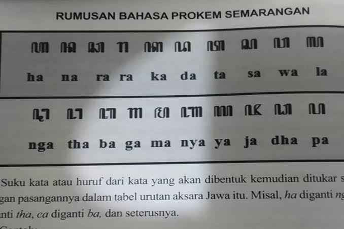

Rumah adat di Semarang, yang paling terkenal adalah Rumah Joglo, yang merupakan rumah adat khas Jawa Tengah. Rumah Joglo di Semarang memiliki ciri khas akulturasi budaya yang unik. Meskipun Rumah Joglo adalah rumah adat Jawa Tengah secara umum, setiap daerah, termasuk Semarang, memiliki kekhasan tersendiri dalam arsitektur Joglo-nya.

Pakaian adat Semarang, yang dikenal sebagai Gagrak Semarangan, memiliki ciri khas tersendiri baik untuk pria maupun wanita. Pakaian pria terdiri dari ikat kepala, baju beskap (mirip jas), jarik bermotif Lumintu, sabuk hitam, dan sandal bendol. Untuk wanita, pakaiannya meliputi kebaya, jarik Lumintu, sandal Tlangkeban, dan tatanan rambut gempol atau konde.

Tari Gambang Semarang adalah tarian tradisional khas Semarang yang merupakan hasil akulturasi budaya Jawa dan Tionghoa. Tarian ini dikenal karena perpaduannya dengan musik, vokal, dan unsur lawak, menciptakan suasana ceria dan energik.

Senjata tradisional yang dikenal di Semarang, seperti halnya daerah lain di Jawa Tengah, adalah keris. Keris adalah senjata tikam yang memiliki nilai filosofis mendalam dalam budaya Jawa

Aksara Jawa di Semarang, seperti daerah Jawa Tengah lainnya, adalah bagian dari warisan budaya yang masih diajarkan sebagai muatan lokal

Karya seni di Semarang, Jawa Tengah, mencakup berbagai bentuk, mulai dari seni rupa kontemporer hingga seni pertunjukan tradisional. Beberapa contoh karya seni yang terkenal dari Semarang antara lain adalah: Semarang Contemporary Art Gallery yang memamerkan karya seni rupa kontemporer, Gedung Oudetrap yang sering menjadi tempat pameran seni dan pertunjukan, serta berbagai kesenian tradisional seperti Gambang Semarang, Tari Semarangan, Kethoprak, Wayang Orang, dan Wayang Kulit.

Gambang Semarang adalah kesenian tradisional khas Semarang, Jawa Tengah, yang merupakan perpaduan antara seni musik, tari, dan lawak. Kesenian ini menggunakan alat musik tradisional seperti gambang, kendang, bonang, kempul, gong, suling, dan kecrek, serta alat musik gesek seperti tehyan dan sukong. Ciri khasnya adalah alunan musik yang dinamis dan gerak kaki penari yang lincah mengikuti irama lagu. .